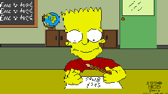
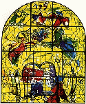
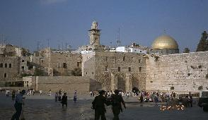
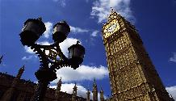

A J G E
ACTIVITIES DESCRIPTION
version française

CULTURAL EVENTS

-
 THE COLLOQUY :
The colloquy is typically the place where AJGE invites
famous personnalities, to confront their opinions
about a serious topic of judaism in front of a public
coming or not from the assiociation.
THE COLLOQUY :
The colloquy is typically the place where AJGE invites
famous personnalities, to confront their opinions
about a serious topic of judaism in front of a public
coming or not from the assiociation.
-
 THE CONFERENCES :
They give the opportunity to the speaker
(who may be a writer, an historian, a journalist, a politician...) to come and express himself on a topical question or on a fundamental problem.
THE CONFERENCES :
They give the opportunity to the speaker
(who may be a writer, an historian, a journalist, a politician...) to come and express himself on a topical question or on a fundamental problem.
-
 THE CYCLES OF CONFERENCES:
All along the year, personnalities from the communauty highlight different aspects of a same
general topic.
THE CYCLES OF CONFERENCES:
All along the year, personnalities from the communauty highlight different aspects of a same
general topic.

-
 LESSONS OF JEWISH THOUGHTS :
Several series of weekly or monthly courses are made in
Paris and in the suburb to deal with different fundamental points of
judaism.
LESSONS OF JEWISH THOUGHTS :
Several series of weekly or monthly courses are made in
Paris and in the suburb to deal with different fundamental points of
judaism.

-
THE TRIP TO ISRAEL :
Every year, during three weeks, our members can discover not only touristical aspects but also economical, political, and social reality of Israel. This is achieved with several visits in companies and universities, mixed with conferences on israeli actuality.
LEASURE ACTIVITIES
-
DANCING PARTIES :
Each time in a different but always prestigious place,
they gather more than a thousand young people who want to have fun all the night
and dance on exotic ryhtms...
-
RESTAURANT, CINEMA, AND THEATER EVENINGS ... :
They allow our members to get together in a friendly and cordial mood.
AJGE IS ALSO ...

-
WEEK END & "COMPLETE SHABBATH :
These are the famous week end in Strasbourg, but also
in London, Anvers and Amsterdam, and at last the complete Shabbath
in Camp David...
-
It is a unique opportunity for about sixty people, who can escape
during a week at the montains, in the biggest ski stations in
France. This year we will be in LES ARCS 1800
To go back to the first page, just click on
back